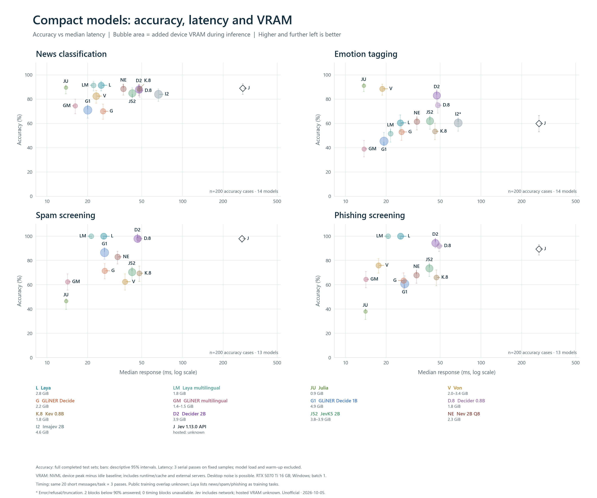
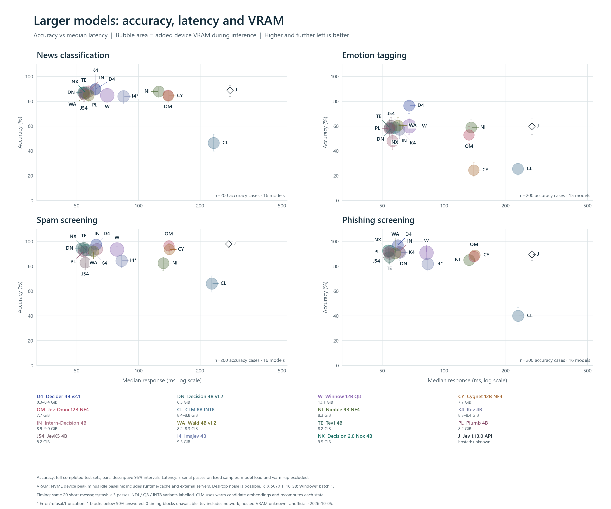
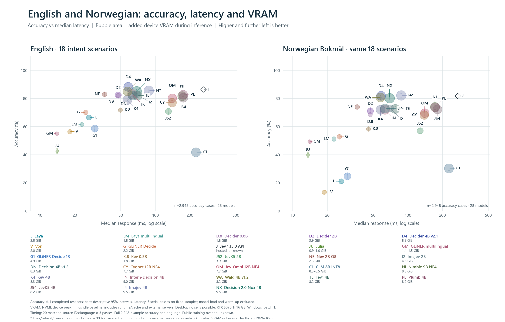
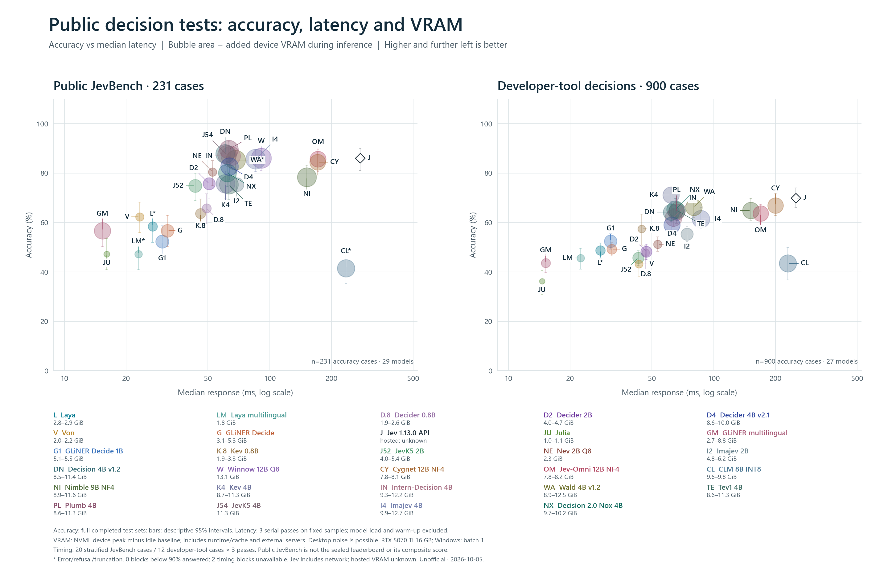
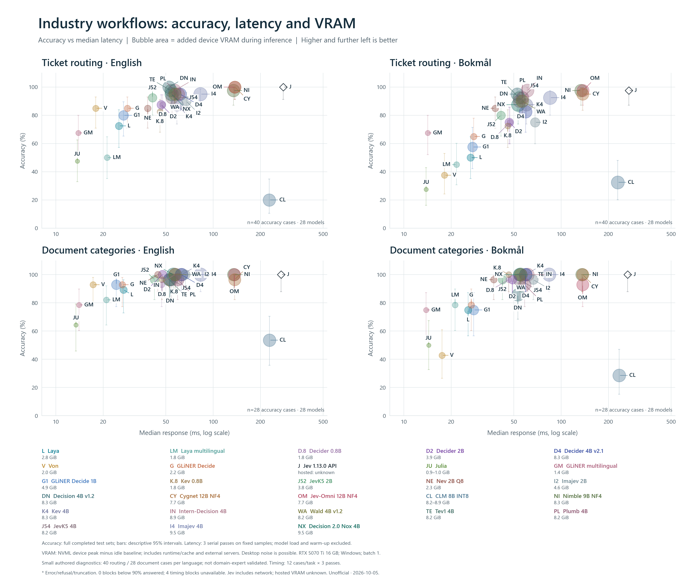

Download graphs, SVGs and measurements · Exact measurements





| Model | Task | Accuracy | Median ms | P95 ms | Added VRAM GiB | Timed answered | Truncated calls |
|---|---|---|---|---|---|---|---|
| Jev 1.13.0 API | fresh/news | 178/200 (89.0%) | 279.4 | 328.7 | Unknown | 60/60 | 0 |
| Jev 1.13.0 API | fresh/emotion | 120/200 (60.0%) | 267.9 | 325.6 | Unknown | 60/60 | 0 |
| Jev 1.13.0 API | fresh/spam | 196/200 (98.0%) | 275.1 | 355.2 | Unknown | 60/60 | 0 |
| Jev 1.13.0 API | fresh/phishing | 179/200 (89.5%) | 268.5 | 355.1 | Unknown | 60/60 | 0 |
| Jev 1.13.0 API | massive_en | 2550/2948 (86.5%) | 261.3 | 308.1 | Unknown | 60/60 | 0 |
| Jev 1.13.0 API | massive_nb | 2412/2948 (81.8%) | 271.1 | 348.6 | Unknown | 60/60 | 0 |
| Jev 1.13.0 API | public_jevbench | 199/231 (86.1%) | 275.8 | 328.5 | Unknown | 60/60 | 0 |
| Jev 1.13.0 API | kev_claim/devtools-v1 | 629/900 (69.9%) | 251.5 | 296.1 | Unknown | 36/36 | 0 |
| Jev 1.13.0 API | industry/routing/en | 40/40 (100.0%) | 279.1 | 326.1 | Unknown | 36/36 | 0 |
| Jev 1.13.0 API | industry/routing/nb | 39/40 (97.5%) | 269.0 | 307.7 | Unknown | 36/36 | 0 |
| Jev 1.13.0 API | industry/documents/en | 28/28 (100.0%) | 270.4 | 317.0 | Unknown | 36/36 | 0 |
| Jev 1.13.0 API | industry/documents/nb | 28/28 (100.0%) | 264.8 | 313.1 | Unknown | 36/36 | 0 |
| CLM 8B INT8 | fresh/news | 93/200 (46.5%) | 232.4 | 259.6 | 8.66 | 60/60 | 0 |
| CLM 8B INT8 | fresh/emotion | 51/200 (25.5%) | 229.4 | 243.6 | 8.35 | 60/60 | 0 |
| CLM 8B INT8 | fresh/spam | 132/200 (66.0%) | 227.5 | 239.6 | 8.84 | 60/60 | 0 |
| CLM 8B INT8 | fresh/phishing | 80/200 (40.0%) | 229.6 | 244.8 | 8.70 | 60/60 | 0 |
| CLM 8B INT8 | massive_en | 1229/2948 (41.7%) | 225.1 | 248.2 | 8.26 | 60/60 | 0 |
| CLM 8B INT8 | massive_nb | 894/2948 (30.3%) | 227.1 | 242.5 | 8.47 | 60/60 | 0 |
| CLM 8B INT8 | public_jevbench | 96/231 (41.6%) | 235.3 | 829.0 | 9.83 | 60/60 | 15 |
| CLM 8B INT8 | kev_claim/devtools-v1 | 391/900 (43.4%) | 229.2 | 322.8 | 9.55 | 36/36 | 0 |
| CLM 8B INT8 | industry/routing/en | 8/40 (20.0%) | 227.4 | 244.8 | 8.16 | 36/36 | 0 |
| CLM 8B INT8 | industry/routing/nb | 13/40 (32.5%) | 228.7 | 244.1 | 8.92 | 36/36 | 0 |
| CLM 8B INT8 | industry/documents/en | 15/28 (53.6%) | 228.2 | 243.8 | 8.35 | 36/36 | 0 |
| CLM 8B INT8 | industry/documents/nb | 8/28 (28.6%) | 233.6 | 244.5 | 8.67 | 36/36 | 0 |
| Cygnet 12B NF4 | fresh/news | 169/200 (84.5%) | 139.7 | 149.8 | 7.67 | 60/60 | 0 |
| Cygnet 12B NF4 | fresh/emotion | 49/200 (24.5%) | 139.7 | 150.0 | 7.67 | 60/60 | 0 |
| Cygnet 12B NF4 | fresh/spam | 187/200 (93.5%) | 141.2 | 202.3 | 7.67 | 60/60 | 0 |
| Cygnet 12B NF4 | fresh/phishing | 178/200 (89.0%) | 141.3 | 193.4 | 7.67 | 60/60 | 0 |
| Cygnet 12B NF4 | massive_en | 2272/2948 (77.1%) | 139.4 | 150.9 | 7.67 | 60/60 | 0 |
| Cygnet 12B NF4 | massive_nb | 2013/2948 (68.3%) | 138.7 | 150.0 | 7.67 | 60/60 | 0 |
| Cygnet 12B NF4 | public_jevbench | 195/231 (84.4%) | 171.3 | 1307.7 | 8.11 | 60/60 | 0 |
| Cygnet 12B NF4 | kev_claim/devtools-v1 | 602/900 (66.9%) | 199.7 | 558.0 | 7.79 | 36/36 | 0 |
| Cygnet 12B NF4 | industry/routing/en | 40/40 (100.0%) | 137.6 | 149.1 | 7.67 | 36/36 | 0 |
| Cygnet 12B NF4 | industry/routing/nb | 38/40 (95.0%) | 136.9 | 149.2 | 7.67 | 36/36 | 0 |
| Cygnet 12B NF4 | industry/documents/en | 27/28 (96.4%) | 137.1 | 148.0 | 7.67 | 36/36 | 0 |
| Cygnet 12B NF4 | industry/documents/nb | 28/28 (100.0%) | 137.2 | 149.5 | 7.67 | 36/36 | 0 |
| Decider 0.8B | fresh/news | 174/200 (87.0%) | 48.4 | 58.7 | 1.83 | 60/60 | 0 |
| Decider 0.8B | fresh/emotion | 150/200 (75.0%) | 48.1 | 63.6 | 1.83 | 60/60 | 0 |
| Decider 0.8B | fresh/spam | 196/200 (98.0%) | 47.7 | 59.9 | 1.83 | 60/60 | 0 |
| Decider 0.8B | fresh/phishing | 184/200 (92.0%) | 49.1 | 59.4 | 1.83 | 60/60 | 0 |
| Decider 0.8B | massive_en | 2423/2948 (82.2%) | 47.6 | 55.6 | 1.83 | 60/60 | 0 |
| Decider 0.8B | massive_nb | 2021/2948 (68.6%) | 47.1 | 56.6 | 1.83 | 60/60 | 0 |
| Decider 0.8B | public_jevbench | 152/231 (65.8%) | 49.3 | 115.8 | 2.64 | 60/60 | 0 |
| Decider 0.8B | kev_claim/devtools-v1 | 431/900 (47.9%) | 46.7 | 55.0 | 1.87 | 36/36 | 0 |
| Decider 0.8B | industry/routing/en | 35/40 (87.5%) | 47.8 | 57.5 | 1.83 | 36/36 | 0 |
| Decider 0.8B | industry/routing/nb | 30/40 (75.0%) | 47.3 | 56.9 | 1.83 | 36/36 | 0 |
| Decider 0.8B | industry/documents/en | 26/28 (92.9%) | 47.2 | 51.8 | 1.83 | 36/36 | 0 |
| Decider 0.8B | industry/documents/nb | 27/28 (96.4%) | 46.5 | 56.6 | 1.83 | 36/36 | 0 |
| Decider 2B | fresh/news | 176/200 (88.0%) | 47.7 | 59.3 | 3.90 | 60/60 | 0 |
| Decider 2B | fresh/emotion | 166/200 (83.0%) | 47.2 | 54.5 | 3.89 | 60/60 | 0 |
| Decider 2B | fresh/spam | 196/200 (98.0%) | 46.6 | 55.6 | 3.90 | 60/60 | 0 |
| Decider 2B | fresh/phishing | 189/200 (94.5%) | 46.1 | 58.0 | 3.90 | 60/60 | 0 |
| Decider 2B | massive_en | 2433/2948 (82.5%) | 47.5 | 55.4 | 3.91 | 60/60 | 0 |
| Decider 2B | massive_nb | 2099/2948 (71.2%) | 47.2 | 55.1 | 3.90 | 60/60 | 0 |
| Decider 2B | public_jevbench | 175/231 (75.8%) | 50.7 | 191.7 | 4.73 | 60/60 | 0 |
| Decider 2B | kev_claim/devtools-v1 | 434/900 (48.2%) | 46.9 | 56.3 | 3.97 | 36/36 | 0 |
| Decider 2B | industry/routing/en | 35/40 (87.5%) | 46.8 | 54.3 | 3.89 | 36/36 | 0 |
| Decider 2B | industry/routing/nb | 30/40 (75.0%) | 46.8 | 56.4 | 3.90 | 36/36 | 0 |
| Decider 2B | industry/documents/en | 28/28 (100.0%) | 47.5 | 58.8 | 3.90 | 36/36 | 0 |
| Decider 2B | industry/documents/nb | 27/28 (96.4%) | 48.9 | 54.6 | 3.90 | 36/36 | 0 |
| Decider 4B v2.1 | fresh/news | 180/200 (90.0%) | 61.7 | 83.1 | 8.33 | 60/60 | 0 |
| Decider 4B v2.1 | fresh/emotion | 153/200 (76.5%) | 67.6 | 93.1 | 8.31 | 60/60 | 0 |
| Decider 4B v2.1 | fresh/spam | 195/200 (97.5%) | 62.1 | 70.4 | 8.37 | 60/60 | 0 |
| Decider 4B v2.1 | fresh/phishing | 194/200 (97.0%) | 59.5 | 70.3 | 8.35 | 60/60 | 0 |
| Decider 4B v2.1 | massive_en | 2603/2948 (88.3%) | 58.1 | 65.6 | 8.35 | 60/60 | 0 |
| Decider 4B v2.1 | massive_nb | 2418/2948 (82.0%) | 58.5 | 72.1 | 8.35 | 60/60 | 0 |
| Decider 4B v2.1 | public_jevbench | 191/231 (82.7%) | 63.7 | 461.9 | 10.01 | 60/60 | 0 |
| Decider 4B v2.1 | kev_claim/devtools-v1 | 531/900 (59.0%) | 62.6 | 133.7 | 8.56 | 36/36 | 0 |
| Decider 4B v2.1 | industry/routing/en | 38/40 (95.0%) | 61.7 | 66.7 | 8.31 | 36/36 | 0 |
| Decider 4B v2.1 | industry/routing/nb | 33/40 (82.5%) | 59.5 | 77.0 | 8.33 | 36/36 | 0 |
| Decider 4B v2.1 | industry/documents/en | 28/28 (100.0%) | 62.7 | 73.7 | 8.33 | 36/36 | 0 |
| Decider 4B v2.1 | industry/documents/nb | 28/28 (100.0%) | 59.5 | 73.1 | 8.32 | 36/36 | 0 |
| Decision 4B v1.2 | fresh/news | 174/200 (87.0%) | 53.6 | 63.4 | 8.28 | 60/60 | 0 |
| Decision 4B v1.2 | fresh/emotion | 116/200 (58.0%) | 55.3 | 66.3 | 8.28 | 60/60 | 0 |
| Decision 4B v1.2 | fresh/spam | 189/200 (94.5%) | 52.6 | 63.0 | 8.32 | 60/60 | 0 |
| Decision 4B v1.2 | fresh/phishing | 185/200 (92.5%) | 54.6 | 64.5 | 8.30 | 60/60 | 0 |
| Decision 4B v1.2 | massive_en | 2425/2948 (82.3%) | 63.2 | 73.8 | 8.32 | 60/60 | 0 |
| Decision 4B v1.2 | massive_nb | 2150/2948 (72.9%) | 63.3 | 74.0 | 8.32 | 60/60 | 0 |
| Decision 4B v1.2 | public_jevbench | 203/231 (87.9%) | 60.7 | 535.8 | 11.42 | 60/60 | 0 |
| Decision 4B v1.2 | kev_claim/devtools-v1 | 578/900 (64.2%) | 62.2 | 187.6 | 8.54 | 36/36 | 0 |
| Decision 4B v1.2 | industry/routing/en | 40/40 (100.0%) | 52.5 | 61.4 | 8.27 | 36/36 | 0 |
| Decision 4B v1.2 | industry/routing/nb | 38/40 (95.0%) | 52.5 | 63.2 | 8.28 | 36/36 | 0 |
| Decision 4B v1.2 | industry/documents/en | 27/28 (96.4%) | 53.1 | 60.9 | 8.28 | 36/36 | 0 |
| Decision 4B v1.2 | industry/documents/nb | 24/28 (85.7%) | 53.1 | 61.3 | 8.28 | 36/36 | 0 |
| GLiNER Decide 1B | fresh/news | 142/200 (71.0%) | 20.0 | 28.0 | 4.94 | 60/60 | 0 |
| GLiNER Decide 1B | fresh/emotion | 91/200 (45.5%) | 19.2 | 30.9 | 4.94 | 60/60 | 0 |
| GLiNER Decide 1B | fresh/spam | 173/200 (86.5%) | 26.6 | 30.4 | 4.94 | 60/60 | 0 |
| GLiNER Decide 1B | fresh/phishing | 122/200 (61.0%) | 27.4 | 30.3 | 4.94 | 60/60 | 0 |
| GLiNER Decide 1B | massive_en | 1729/2948 (58.6%) | 29.8 | 31.5 | 4.94 | 60/60 | 0 |
| GLiNER Decide 1B | massive_nb | 729/2948 (24.7%) | 29.8 | 39.5 | 4.93 | 60/60 | 0 |
| GLiNER Decide 1B | public_jevbench | 121/231 (52.4%) | 29.9 | 417.4 | 5.50 | 60/60 | 0 |
| GLiNER Decide 1B | kev_claim/devtools-v1 | 472/900 (52.4%) | 31.4 | 174.1 | 5.11 | 36/36 | 0 |
| GLiNER Decide 1B | industry/routing/en | 32/40 (80.0%) | 26.9 | 31.4 | 4.94 | 36/36 | 0 |
| GLiNER Decide 1B | industry/routing/nb | 23/40 (57.5%) | 27.4 | 30.7 | 4.94 | 36/36 | 0 |
| GLiNER Decide 1B | industry/documents/en | 26/28 (92.9%) | 24.3 | 31.0 | 4.94 | 36/36 | 0 |
| GLiNER Decide 1B | industry/documents/nb | 21/28 (75.0%) | 27.8 | 37.4 | 4.94 | 36/36 | 0 |
| GLiNER multilingual | fresh/news | 149/200 (74.5%) | 16.2 | 27.5 | 1.45 | 60/60 | 0 |
| GLiNER multilingual | fresh/emotion | 78/200 (39.0%) | 13.7 | 23.0 | 1.42 | 60/60 | 0 |
| GLiNER multilingual | fresh/spam | 125/200 (62.5%) | 14.2 | 21.9 | 1.47 | 60/60 | 0 |
| GLiNER multilingual | fresh/phishing | 129/200 (64.5%) | 14.1 | 22.9 | 1.45 | 60/60 | 0 |
| GLiNER multilingual | massive_en | 1625/2948 (55.1%) | 13.9 | 22.9 | 1.45 | 60/60 | 0 |
| GLiNER multilingual | massive_nb | 1455/2948 (49.4%) | 14.1 | 22.6 | 1.45 | 60/60 | 0 |
| GLiNER multilingual | public_jevbench | 131/231 (56.7%) | 15.3 | 384.9 | 8.84 | 60/60 | 0 |
| GLiNER multilingual | kev_claim/devtools-v1 | 393/900 (43.7%) | 15.2 | 121.8 | 2.70 | 36/36 | 0 |
| GLiNER multilingual | industry/routing/en | 27/40 (67.5%) | 13.9 | 24.3 | 1.42 | 36/36 | 0 |
| GLiNER multilingual | industry/routing/nb | 27/40 (67.5%) | 14.2 | 21.8 | 1.42 | 36/36 | 0 |
| GLiNER multilingual | industry/documents/en | 22/28 (78.6%) | 14.0 | 22.1 | 1.43 | 36/36 | 0 |
| GLiNER multilingual | industry/documents/nb | 21/28 (75.0%) | 13.8 | 21.8 | 1.43 | 36/36 | 0 |
| GLiNER Decide | fresh/news | 140/200 (70.0%) | 25.9 | 35.1 | 2.17 | 60/60 | 0 |
| GLiNER Decide | fresh/emotion | 106/200 (53.0%) | 26.0 | 35.8 | 2.16 | 60/60 | 0 |
| GLiNER Decide | fresh/spam | 143/200 (71.5%) | 26.7 | 38.7 | 2.20 | 60/60 | 0 |
| GLiNER Decide | fresh/phishing | 127/200 (63.5%) | 26.9 | 40.5 | 2.20 | 60/60 | 0 |
| GLiNER Decide | massive_en | 2067/2948 (70.1%) | 24.9 | 35.0 | 2.17 | 60/60 | 0 |
| GLiNER Decide | massive_nb | 1557/2948 (52.8%) | 25.4 | 35.0 | 2.18 | 60/60 | 0 |
| GLiNER Decide | public_jevbench | 131/231 (56.7%) | 31.7 | 557.2 | 5.26 | 60/60 | 0 |
| GLiNER Decide | kev_claim/devtools-v1 | 443/900 (49.2%) | 31.9 | 165.8 | 3.09 | 36/36 | 0 |
| GLiNER Decide | industry/routing/en | 34/40 (85.0%) | 28.5 | 45.9 | 2.16 | 36/36 | 0 |
| GLiNER Decide | industry/routing/nb | 26/40 (65.0%) | 27.8 | 37.4 | 2.16 | 36/36 | 0 |
| GLiNER Decide | industry/documents/en | 26/28 (92.9%) | 26.5 | 39.8 | 2.16 | 36/36 | 0 |
| GLiNER Decide | industry/documents/nb | 22/28 (78.6%) | 26.9 | 37.9 | 2.16 | 36/36 | 0 |
| Imajev 2B | fresh/news | 168/200 (84.0%) | 66.5 | 77.6 | 4.63 | 60/60 | 0 |
| Imajev 2B | fresh/emotion | 121/200 (60.5%) | 68.0 | 84.2 | 4.61 | 54/60 | 0 |
| Imajev 2B | fresh/spam | 136/200 (68.0%) | 66.6 | 73.4 | 4.63 | 51/60 | 0 |
| Imajev 2B | fresh/phishing | 144/200 (72.0%) | 66.3 | 75.1 | 4.64 | 48/60 | 0 |
| Imajev 2B | massive_en | 2439/2948 (82.7%) | 69.1 | 82.7 | 4.64 | 60/60 | 0 |
| Imajev 2B | massive_nb | 2156/2948 (73.1%) | 70.3 | 87.0 | 4.64 | 60/60 | 0 |
| Imajev 2B | public_jevbench | 174/231 (75.3%) | 69.2 | 299.8 | 6.17 | 60/60 | 0 |
| Imajev 2B | kev_claim/devtools-v1 | 498/900 (55.3%) | 74.1 | 101.9 | 4.81 | 36/36 | 0 |
| Imajev 2B | industry/routing/en | 36/40 (90.0%) | 67.5 | 77.2 | 4.63 | 36/36 | 0 |
| Imajev 2B | industry/routing/nb | 30/40 (75.0%) | 68.3 | 72.9 | 4.63 | 36/36 | 0 |
| Imajev 2B | industry/documents/en | 28/28 (100.0%) | 66.6 | 74.0 | 4.63 | 36/36 | 0 |
| Imajev 2B | industry/documents/nb | 27/28 (96.4%) | 66.5 | 77.1 | 4.63 | 36/36 | 0 |
| Imajev 4B | fresh/news | 168/200 (84.0%) | 84.6 | 93.7 | 9.46 | 57/60 | 0 |
| Imajev 4B | fresh/emotion | 80/200 (40.0%) | 85.1 | 98.4 | 9.46 | 36/60 | 0 |
| Imajev 4B | fresh/spam | 169/200 (84.5%) | 82.7 | 97.1 | 9.48 | 57/60 | 0 |
| Imajev 4B | fresh/phishing | 164/200 (82.0%) | 83.4 | 97.1 | 9.48 | 54/60 | 0 |
| Imajev 4B | massive_en | 2524/2948 (85.6%) | 87.7 | 97.2 | 9.48 | 57/60 | 0 |
| Imajev 4B | massive_nb | 2424/2948 (82.2%) | 87.5 | 100.4 | 9.49 | 57/60 | 0 |
| Imajev 4B | public_jevbench | 198/231 (85.7%) | 85.5 | 707.3 | 12.66 | 60/60 | 0 |
| Imajev 4B | kev_claim/devtools-v1 | 553/900 (61.4%) | 86.7 | 218.0 | 9.92 | 36/36 | 0 |
| Imajev 4B | industry/routing/en | 38/40 (95.0%) | 83.1 | 93.6 | 9.46 | 36/36 | 0 |
| Imajev 4B | industry/routing/nb | 37/40 (92.5%) | 85.0 | 94.2 | 9.46 | 36/36 | 0 |
| Imajev 4B | industry/documents/en | 28/28 (100.0%) | 83.2 | 91.8 | 9.46 | 36/36 | 0 |
| Imajev 4B | industry/documents/nb | 28/28 (100.0%) | 83.8 | 92.1 | 9.46 | 36/36 | 0 |
| Intern-Decision 4B | fresh/news | 176/200 (88.0%) | 57.0 | 70.3 | 8.94 | 60/60 | 0 |
| Intern-Decision 4B | fresh/emotion | 96/200 (48.0%) | 56.1 | 65.6 | 8.92 | 60/60 | 0 |
| Intern-Decision 4B | fresh/spam | 188/200 (94.0%) | 62.7 | 71.3 | 8.97 | 60/60 | 0 |
| Intern-Decision 4B | fresh/phishing | 183/200 (91.5%) | 60.4 | 67.2 | 8.95 | 60/60 | 0 |
| Intern-Decision 4B | massive_en | 2448/2948 (83.0%) | 63.0 | 70.5 | 8.96 | 60/60 | 0 |
| Intern-Decision 4B | massive_nb | 2126/2948 (72.1%) | 63.2 | 73.1 | 8.96 | 60/60 | 0 |
| Intern-Decision 4B | public_jevbench | 201/231 (87.0%) | 64.5 | 542.3 | 12.19 | 60/60 | 0 |
| Intern-Decision 4B | kev_claim/devtools-v1 | 557/900 (61.9%) | 63.7 | 158.8 | 9.25 | 36/36 | 0 |
| Intern-Decision 4B | industry/routing/en | 39/40 (97.5%) | 56.8 | 65.5 | 8.92 | 36/36 | 0 |
| Intern-Decision 4B | industry/routing/nb | 39/40 (97.5%) | 61.0 | 72.0 | 8.93 | 36/36 | 0 |
| Intern-Decision 4B | industry/documents/en | 28/28 (100.0%) | 57.4 | 63.8 | 8.94 | 36/36 | 0 |
| Intern-Decision 4B | industry/documents/nb | 28/28 (100.0%) | 61.2 | 71.3 | 8.93 | 36/36 | 0 |
| Jev-Omni 12B NF4 | fresh/news | 170/200 (85.0%) | 139.4 | 150.2 | 7.71 | 60/60 | 0 |
| Jev-Omni 12B NF4 | fresh/emotion | 106/200 (53.0%) | 132.3 | 144.0 | 7.71 | 60/60 | 0 |
| Jev-Omni 12B NF4 | fresh/spam | 193/200 (96.5%) | 140.6 | 155.0 | 7.71 | 60/60 | 0 |
| Jev-Omni 12B NF4 | fresh/phishing | 176/200 (88.0%) | 140.1 | 151.0 | 7.71 | 60/60 | 0 |
| Jev-Omni 12B NF4 | massive_en | 2365/2948 (80.2%) | 140.2 | 153.4 | 7.70 | 60/60 | 0 |
| Jev-Omni 12B NF4 | massive_nb | 2055/2948 (69.7%) | 139.9 | 153.0 | 7.70 | 60/60 | 0 |
| Jev-Omni 12B NF4 | public_jevbench | 198/231 (85.7%) | 172.0 | 1232.8 | 8.17 | 60/60 | 0 |
| Jev-Omni 12B NF4 | kev_claim/devtools-v1 | 573/900 (63.7%) | 169.3 | 545.4 | 7.82 | 36/36 | 0 |
| Jev-Omni 12B NF4 | industry/routing/en | 40/40 (100.0%) | 137.1 | 148.4 | 7.70 | 36/36 | 0 |
| Jev-Omni 12B NF4 | industry/routing/nb | 39/40 (97.5%) | 137.5 | 148.3 | 7.70 | 36/36 | 0 |
| Jev-Omni 12B NF4 | industry/documents/en | 28/28 (100.0%) | 136.6 | 148.1 | 7.70 | 36/36 | 0 |
| Jev-Omni 12B NF4 | industry/documents/nb | 26/28 (92.9%) | 137.1 | 149.2 | 7.70 | 36/36 | 0 |
| JevK5 2B | fresh/news | 170/200 (85.0%) | 42.7 | 51.6 | 3.85 | 60/60 | 0 |
| JevK5 2B | fresh/emotion | 124/200 (62.0%) | 42.0 | 51.8 | 3.84 | 60/60 | 0 |
| JevK5 2B | fresh/spam | 141/200 (70.5%) | 42.5 | 52.5 | 3.87 | 60/60 | 0 |
| JevK5 2B | fresh/phishing | 147/200 (73.5%) | 41.6 | 51.4 | 3.85 | 60/60 | 0 |
| JevK5 2B | massive_en | 2089/2948 (70.9%) | 129.4 | 142.5 | 3.87 | 60/60 | 0 |
| JevK5 2B | massive_nb | 1682/2948 (57.1%) | 128.0 | 136.4 | 3.87 | 60/60 | 0 |
| JevK5 2B | public_jevbench | 173/231 (74.9%) | 43.4 | 215.0 | 5.42 | 60/60 | 0 |
| JevK5 2B | kev_claim/devtools-v1 | 412/900 (45.8%) | 42.9 | 73.0 | 4.04 | 36/36 | 0 |
| JevK5 2B | industry/routing/en | 37/40 (92.5%) | 41.2 | 48.4 | 3.85 | 36/36 | 0 |
| JevK5 2B | industry/routing/nb | 32/40 (80.0%) | 41.4 | 47.5 | 3.84 | 36/36 | 0 |
| JevK5 2B | industry/documents/en | 27/28 (96.4%) | 42.4 | 50.8 | 3.84 | 36/36 | 0 |
| JevK5 2B | industry/documents/nb | 27/28 (96.4%) | 42.4 | 51.4 | 3.85 | 36/36 | 0 |
| JevK5 4B | fresh/news | 173/200 (86.5%) | 54.2 | 64.4 | 8.19 | 60/60 | 0 |
| JevK5 4B | fresh/emotion | 121/200 (60.5%) | 55.3 | 68.1 | 8.18 | 60/60 | 0 |
| JevK5 4B | fresh/spam | 166/200 (83.0%) | 55.0 | 68.5 | 8.22 | 60/60 | 0 |
| JevK5 4B | fresh/phishing | 180/200 (90.0%) | 54.3 | 63.6 | 8.19 | 60/60 | 0 |
| JevK5 4B | massive_en | 2375/2948 (80.6%) | 174.6 | 184.6 | 8.21 | 60/60 | 0 |
| JevK5 4B | massive_nb | 2133/2948 (72.4%) | 180.1 | 192.1 | 8.23 | 60/60 | 0 |
| JevK5 4B | public_jevbench | 202/231 (87.4%) | 61.9 | 561.1 | 11.32 | 60/60 | 0 |
| JevK5 4B | industry/routing/en | 37/40 (92.5%) | 54.8 | 64.9 | 8.19 | 36/36 | 0 |
| JevK5 4B | industry/routing/nb | 36/40 (90.0%) | 54.3 | 62.6 | 8.19 | 36/36 | 0 |
| JevK5 4B | industry/documents/en | 27/28 (96.4%) | 54.5 | 60.3 | 8.20 | 36/36 | 0 |
| JevK5 4B | industry/documents/nb | 27/28 (96.4%) | 54.3 | 60.2 | 8.19 | 36/36 | 0 |
| Julia | fresh/news | 179/200 (89.5%) | 13.8 | 23.0 | 0.95 | 60/60 | 0 |
| Julia | fresh/emotion | 182/200 (91.0%) | 13.7 | 22.9 | 0.95 | 60/60 | 0 |
| Julia | fresh/spam | 93/200 (46.5%) | 13.9 | 21.0 | 0.95 | 60/60 | 0 |
| Julia | fresh/phishing | 76/200 (38.0%) | 14.1 | 22.1 | 0.95 | 60/60 | 0 |
| Julia | massive_en | 1256/2948 (42.6%) | 14.1 | 22.9 | 0.95 | 60/60 | 0 |
| Julia | massive_nb | 1174/2948 (39.8%) | 13.6 | 19.7 | 0.95 | 60/60 | 0 |
| Julia | public_jevbench | 109/231 (47.2%) | 16.1 | 51.1 | 1.14 | 60/60 | 0 |
| Julia | kev_claim/devtools-v1 | 326/900 (36.2%) | 14.6 | 27.3 | 0.97 | 36/36 | 0 |
| Julia | industry/routing/en | 19/40 (47.5%) | 13.7 | 20.8 | 0.95 | 36/36 | 0 |
| Julia | industry/routing/nb | 11/40 (27.5%) | 13.9 | 20.3 | 0.95 | 36/36 | 0 |
| Julia | industry/documents/en | 18/28 (64.3%) | 13.4 | 24.7 | 0.95 | 36/36 | 0 |
| Julia | industry/documents/nb | 14/28 (50.0%) | 14.4 | 23.6 | 0.95 | 36/36 | 0 |
| Kev 0.8B | fresh/news | 177/200 (88.5%) | 48.2 | 82.9 | 1.83 | 60/60 | 0 |
| Kev 0.8B | fresh/emotion | 107/200 (53.5%) | 45.8 | 62.7 | 1.83 | 60/60 | 0 |
| Kev 0.8B | fresh/spam | 139/200 (69.5%) | 48.1 | 77.3 | 1.84 | 60/60 | 0 |
| Kev 0.8B | fresh/phishing | 132/200 (66.0%) | 46.9 | 62.2 | 1.83 | 60/60 | 0 |
| Kev 0.8B | massive_en | 2114/2948 (71.7%) | 49.7 | 77.4 | 1.83 | 60/60 | 0 |
| Kev 0.8B | massive_nb | 1719/2948 (58.3%) | 45.4 | 56.0 | 1.83 | 60/60 | 0 |
| Kev 0.8B | public_jevbench | 147/231 (63.6%) | 46.0 | 138.6 | 3.27 | 60/60 | 0 |
| Kev 0.8B | kev_claim/devtools-v1 | 517/900 (57.4%) | 44.6 | 55.7 | 1.92 | 36/36 | 0 |
| Kev 0.8B | industry/routing/en | 33/40 (82.5%) | 45.9 | 52.1 | 1.83 | 36/36 | 0 |
| Kev 0.8B | industry/routing/nb | 29/40 (72.5%) | 45.7 | 53.5 | 1.83 | 36/36 | 0 |
| Kev 0.8B | industry/documents/en | 27/28 (96.4%) | 47.3 | 53.4 | 1.83 | 36/36 | 0 |
| Kev 0.8B | industry/documents/nb | 28/28 (100.0%) | 46.4 | 55.5 | 1.83 | 36/36 | 0 |
| Kev 4B | fresh/news | 179/200 (89.5%) | 61.5 | 78.8 | 8.33 | 60/60 | 0 |
| Kev 4B | fresh/emotion | 114/200 (57.0%) | 60.7 | 73.9 | 8.31 | 60/60 | 0 |
| Kev 4B | fresh/spam | 186/200 (93.0%) | 58.5 | 67.5 | 8.35 | 60/60 | 0 |
| Kev 4B | fresh/phishing | 182/200 (91.0%) | 61.1 | 72.6 | 8.35 | 60/60 | 0 |
| Kev 4B | massive_en | 2327/2948 (78.9%) | 57.0 | 65.0 | 8.35 | 60/60 | 0 |
| Kev 4B | massive_nb | 2123/2948 (72.0%) | 57.8 | 76.9 | 8.35 | 60/60 | 0 |
| Kev 4B | public_jevbench | 175/231 (75.8%) | 60.9 | 514.1 | 11.28 | 60/60 | 0 |
| Kev 4B | kev_claim/devtools-v1 | 640/900 (71.1%) | 61.8 | 142.6 | 8.67 | 36/36 | 0 |
| Kev 4B | industry/routing/en | 35/40 (87.5%) | 58.8 | 68.4 | 8.33 | 36/36 | 0 |
| Kev 4B | industry/routing/nb | 35/40 (87.5%) | 60.1 | 70.3 | 8.33 | 36/36 | 0 |
| Kev 4B | industry/documents/en | 28/28 (100.0%) | 63.1 | 68.8 | 8.33 | 36/36 | 0 |
| Kev 4B | industry/documents/nb | 28/28 (100.0%) | 59.4 | 68.7 | 8.33 | 36/36 | 0 |
| Laya multilingual | fresh/news | 183/200 (91.5%) | 22.1 | 29.8 | 1.78 | 60/60 | 0 |
| Laya multilingual | fresh/emotion | 103/200 (51.5%) | 21.5 | 29.9 | 1.79 | 60/60 | 0 |
| Laya multilingual | fresh/spam | 200/200 (100.0%) | 21.2 | 25.2 | 1.78 | 60/60 | 0 |
| Laya multilingual | fresh/phishing | 200/200 (100.0%) | 20.7 | 24.1 | 1.78 | 60/60 | 0 |
| Laya multilingual | massive_en | 1815/2948 (61.6%) | 22.9 | 27.0 | 1.78 | 60/60 | 0 |
| Laya multilingual | massive_nb | 1511/2948 (51.3%) | 22.8 | 31.4 | 1.79 | 60/60 | 0 |
| Laya multilingual | public_jevbench | 109/231 (47.2%) | 22.9 | 30.9 | 1.80 | 60/60 | 15 |
| Laya multilingual | kev_claim/devtools-v1 | 411/900 (45.7%) | 22.5 | 30.2 | 1.82 | 36/36 | 0 |
| Laya multilingual | industry/routing/en | 20/40 (50.0%) | 21.2 | 25.8 | 1.78 | 36/36 | 0 |
| Laya multilingual | industry/routing/nb | 18/40 (45.0%) | 21.6 | 27.7 | 1.79 | 36/36 | 0 |
| Laya multilingual | industry/documents/en | 23/28 (82.1%) | 21.0 | 29.8 | 1.78 | 36/36 | 0 |
| Laya multilingual | industry/documents/nb | 22/28 (78.6%) | 21.2 | 25.6 | 1.78 | 36/36 | 0 |
| Laya | fresh/news | 183/200 (91.5%) | 25.2 | 36.1 | 2.75 | 60/60 | 0 |
| Laya | fresh/emotion | 121/200 (60.5%) | 25.4 | 35.0 | 2.75 | 60/60 | 0 |
| Laya | fresh/spam | 200/200 (100.0%) | 26.2 | 33.9 | 2.75 | 60/60 | 0 |
| Laya | fresh/phishing | 200/200 (100.0%) | 25.5 | 37.0 | 2.75 | 60/60 | 0 |
| Laya | massive_en | 1962/2948 (66.6%) | 26.5 | 34.3 | 2.76 | 60/60 | 0 |
| Laya | massive_nb | 621/2948 (21.1%) | 26.4 | 29.4 | 2.75 | 60/60 | 0 |
| Laya | public_jevbench | 135/231 (58.4%) | 26.9 | 37.8 | 2.77 | 60/60 | 15 |
| Laya | kev_claim/devtools-v1 | 439/900 (48.8%) | 28.0 | 36.5 | 2.86 | 36/36 | 6 |
| Laya | industry/routing/en | 29/40 (72.5%) | 25.2 | 33.4 | 2.75 | 36/36 | 0 |
| Laya | industry/routing/nb | 20/40 (50.0%) | 26.6 | 35.2 | 2.75 | 36/36 | 0 |
| Laya | industry/documents/en | 25/28 (89.3%) | 26.9 | 34.0 | 2.75 | 36/36 | 0 |
| Laya | industry/documents/nb | 21/28 (75.0%) | 25.6 | 34.7 | 2.75 | 36/36 | 0 |
| Nev 2B Q8 | fresh/news | 177/200 (88.5%) | 36.6 | 56.4 | 2.28 | 60/60 | 0 |
| Nev 2B Q8 | fresh/emotion | 123/200 (61.5%) | 33.7 | 52.3 | 2.27 | 60/60 | 0 |
| Nev 2B Q8 | fresh/spam | 166/200 (83.0%) | 33.2 | 61.1 | 2.28 | 60/60 | 0 |
| Nev 2B Q8 | fresh/phishing | 136/200 (68.0%) | 33.4 | 54.9 | 2.27 | 60/60 | 0 |
| Nev 2B Q8 | massive_en | 2449/2948 (83.1%) | 36.3 | 59.0 | 2.28 | 60/60 | 0 |
| Nev 2B Q8 | massive_nb | 2183/2948 (74.1%) | 36.3 | 61.5 | 2.27 | 60/60 | 0 |
| Nev 2B Q8 | public_jevbench | 186/231 (80.5%) | 52.6 | 205.4 | 2.28 | 60/60 | 0 |
| Nev 2B Q8 | kev_claim/devtools-v1 | 461/900 (51.2%) | 53.3 | 118.4 | 2.27 | 36/36 | 0 |
| Nev 2B Q8 | industry/routing/en | 34/40 (85.0%) | 38.4 | 61.1 | 2.28 | 36/36 | 0 |
| Nev 2B Q8 | industry/routing/nb | 34/40 (85.0%) | 38.2 | 56.2 | 2.27 | 36/36 | 0 |
| Nev 2B Q8 | industry/documents/en | 28/28 (100.0%) | 44.6 | 64.8 | 2.27 | 36/36 | 0 |
| Nev 2B Q8 | industry/documents/nb | 27/28 (96.4%) | 37.3 | 52.8 | 2.27 | 36/36 | 0 |
| Nimble 9B NF4 | fresh/news | 176/200 (88.0%) | 125.6 | 142.5 | 8.33 | 60/60 | 0 |
| Nimble 9B NF4 | fresh/emotion | 118/200 (59.0%) | 135.9 | 146.6 | 8.33 | 60/60 | 0 |
| Nimble 9B NF4 | fresh/spam | 165/200 (82.5%) | 132.1 | 146.5 | 8.33 | 60/60 | 0 |
| Nimble 9B NF4 | fresh/phishing | 170/200 (85.0%) | 132.6 | 145.4 | 8.33 | 60/60 | 0 |
| Nimble 9B NF4 | massive_en | 2411/2948 (81.8%) | 171.1 | 181.0 | 8.33 | 60/60 | 0 |
| Nimble 9B NF4 | massive_nb | 2181/2948 (74.0%) | 171.4 | 183.5 | 8.33 | 60/60 | 0 |
| Nimble 9B NF4 | public_jevbench | 181/231 (78.4%) | 151.7 | 1188.7 | 11.62 | 60/60 | 0 |
| Nimble 9B NF4 | kev_claim/devtools-v1 | 584/900 (64.9%) | 151.7 | 463.9 | 8.91 | 36/36 | 0 |
| Nimble 9B NF4 | industry/routing/en | 39/40 (97.5%) | 134.5 | 143.7 | 8.33 | 36/36 | 0 |
| Nimble 9B NF4 | industry/routing/nb | 39/40 (97.5%) | 133.8 | 143.9 | 8.33 | 36/36 | 0 |
| Nimble 9B NF4 | industry/documents/en | 28/28 (100.0%) | 135.3 | 145.5 | 8.33 | 36/36 | 0 |
| Nimble 9B NF4 | industry/documents/nb | 28/28 (100.0%) | 135.8 | 146.9 | 8.33 | 36/36 | 0 |
| Plumb 4B | fresh/news | 171/200 (85.5%) | 54.3 | 67.6 | 8.20 | 60/60 | 0 |
| Plumb 4B | fresh/emotion | 116/200 (58.0%) | 54.1 | 64.8 | 8.17 | 60/60 | 0 |
| Plumb 4B | fresh/spam | 184/200 (92.0%) | 54.0 | 62.9 | 8.22 | 60/60 | 0 |
| Plumb 4B | fresh/phishing | 183/200 (91.5%) | 53.6 | 64.9 | 8.20 | 60/60 | 0 |
| Plumb 4B | massive_en | 2438/2948 (82.7%) | 174.0 | 183.5 | 8.21 | 60/60 | 0 |
| Plumb 4B | massive_nb | 2174/2948 (73.7%) | 172.3 | 190.9 | 8.21 | 60/60 | 0 |
| Plumb 4B | public_jevbench | 207/231 (89.6%) | 63.2 | 536.4 | 11.32 | 60/60 | 0 |
| Plumb 4B | kev_claim/devtools-v1 | 579/900 (64.3%) | 66.0 | 172.5 | 8.62 | 36/36 | 0 |
| Plumb 4B | industry/routing/en | 38/40 (95.0%) | 60.1 | 71.6 | 8.19 | 36/36 | 0 |
| Plumb 4B | industry/routing/nb | 37/40 (92.5%) | 56.7 | 73.1 | 8.20 | 36/36 | 0 |
| Plumb 4B | industry/documents/en | 27/28 (96.4%) | 59.5 | 76.6 | 8.19 | 36/36 | 0 |
| Plumb 4B | industry/documents/nb | 26/28 (92.9%) | 58.6 | 74.1 | 8.19 | 36/36 | 0 |
| Tev1 4B | fresh/news | 175/200 (87.5%) | 54.2 | 62.7 | 8.20 | 60/60 | 0 |
| Tev1 4B | fresh/emotion | 118/200 (59.0%) | 54.2 | 67.4 | 8.20 | 60/60 | 0 |
| Tev1 4B | fresh/spam | 190/200 (95.0%) | 54.2 | 65.4 | 8.22 | 60/60 | 0 |
| Tev1 4B | fresh/phishing | 175/200 (87.5%) | 54.1 | 62.9 | 8.20 | 60/60 | 0 |
| Tev1 4B | massive_en | 2421/2948 (82.1%) | 70.3 | 82.5 | 8.24 | 60/60 | 0 |
| Tev1 4B | massive_nb | 2143/2948 (72.7%) | 77.9 | 89.3 | 8.24 | 60/60 | 0 |
| Tev1 4B | public_jevbench | 174/231 (75.3%) | 63.2 | 604.9 | 11.35 | 60/60 | 0 |
| Tev1 4B | kev_claim/devtools-v1 | 584/900 (64.9%) | 66.3 | 178.1 | 8.58 | 36/36 | 0 |
| Tev1 4B | industry/routing/en | 39/40 (97.5%) | 54.0 | 63.2 | 8.19 | 36/36 | 0 |
| Tev1 4B | industry/routing/nb | 37/40 (92.5%) | 54.1 | 73.6 | 8.20 | 36/36 | 0 |
| Tev1 4B | industry/documents/en | 27/28 (96.4%) | 52.5 | 61.5 | 8.19 | 36/36 | 0 |
| Tev1 4B | industry/documents/nb | 28/28 (100.0%) | 54.3 | 64.9 | 8.20 | 36/36 | 0 |
| Von | fresh/news | 165/200 (82.5%) | 23.1 | 39.1 | 3.41 | 60/60 | 0 |
| Von | fresh/emotion | 177/200 (88.5%) | 18.7 | 29.1 | 2.04 | 60/60 | 0 |
| Von | fresh/spam | 125/200 (62.5%) | 37.7 | 47.9 | 2.04 | 60/60 | 0 |
| Von | fresh/phishing | 152/200 (76.0%) | 17.5 | 30.0 | 2.04 | 60/60 | 0 |
| Von | massive_en | 1665/2948 (56.5%) | 18.1 | 28.2 | 2.04 | 60/60 | 0 |
| Von | massive_nb | 394/2948 (13.4%) | 18.8 | 26.2 | 2.04 | 60/60 | 0 |
| Von | public_jevbench | 144/231 (62.3%) | 23.3 | 2626.5 | 2.21 | 60/60 | 0 |
| Von | kev_claim/devtools-v1 | 389/900 (43.2%) | 43.2 | 90.4 | 2.04 | 36/36 | 0 |
| Von | industry/routing/en | 34/40 (85.0%) | 17.9 | 24.6 | 2.04 | 36/36 | 0 |
| Von | industry/routing/nb | 15/40 (37.5%) | 18.2 | 26.9 | 2.04 | 36/36 | 0 |
| Von | industry/documents/en | 26/28 (92.9%) | 17.3 | 26.2 | 2.04 | 36/36 | 0 |
| Von | industry/documents/nb | 12/28 (42.9%) | 17.5 | 26.0 | 2.04 | 36/36 | 0 |
| Wald 4B v1.2 | fresh/news | 170/200 (85.0%) | 57.2 | 66.1 | 8.19 | 60/60 | 0 |
| Wald 4B v1.2 | fresh/emotion | 121/200 (60.5%) | 59.5 | 69.7 | 8.18 | 60/60 | 0 |
| Wald 4B v1.2 | fresh/spam | 184/200 (92.0%) | 60.3 | 71.6 | 8.28 | 60/60 | 0 |
| Wald 4B v1.2 | fresh/phishing | 181/200 (90.5%) | 57.9 | 65.0 | 8.21 | 60/60 | 0 |
| Wald 4B v1.2 | massive_en | 2507/2948 (85.0%) | 57.1 | 68.4 | 8.19 | 60/60 | 0 |
| Wald 4B v1.2 | massive_nb | 2379/2948 (80.7%) | 57.7 | 69.2 | 8.19 | 60/60 | 0 |
| Wald 4B v1.2 | public_jevbench | 197/231 (85.3%) | 68.2 | 1051.3 | 12.51 | 54/60 | 0 |
| Wald 4B v1.2 | kev_claim/devtools-v1 | 595/900 (66.1%) | 80.0 | 282.8 | 8.88 | 36/36 | 0 |
| Wald 4B v1.2 | industry/routing/en | 38/40 (95.0%) | 57.2 | 67.5 | 8.18 | 36/36 | 0 |
| Wald 4B v1.2 | industry/routing/nb | 36/40 (90.0%) | 56.6 | 63.2 | 8.17 | 36/36 | 0 |
| Wald 4B v1.2 | industry/documents/en | 28/28 (100.0%) | 57.2 | 77.5 | 8.18 | 36/36 | 0 |
| Wald 4B v1.2 | industry/documents/nb | 28/28 (100.0%) | 55.5 | 64.2 | 8.17 | 36/36 | 0 |
| Winnow 12B Q8 | fresh/news | 170/200 (85.0%) | 70.3 | 81.2 | 13.06 | 60/60 | 0 |
| Winnow 12B Q8 | fresh/emotion | 120/200 (60.0%) | 67.7 | 70.4 | 13.07 | 60/60 | 0 |
| Winnow 12B Q8 | fresh/spam | 187/200 (93.5%) | 78.4 | 94.1 | 13.07 | 60/60 | 0 |
| Winnow 12B Q8 | fresh/phishing | 182/200 (91.0%) | 82.1 | 91.1 | 13.07 | 60/60 | 0 |
| Winnow 12B Q8 | public_jevbench | 199/231 (86.1%) | 91.0 | 769.4 | 13.07 | 60/60 | 0 |
| Decision 2.0 Nox 4B | fresh/news | 174/200 (87.0%) | 55.3 | 65.9 | 9.48 | 60/60 | 0 |
| Decision 2.0 Nox 4B | fresh/emotion | 118/200 (59.0%) | 57.6 | 70.7 | 9.50 | 60/60 | 0 |
| Decision 2.0 Nox 4B | fresh/spam | 186/200 (93.0%) | 55.7 | 64.7 | 9.53 | 60/60 | 0 |
| Decision 2.0 Nox 4B | fresh/phishing | 185/200 (92.5%) | 53.5 | 63.6 | 9.50 | 60/60 | 0 |
| Decision 2.0 Nox 4B | massive_en | 2512/2948 (85.2%) | 68.8 | 80.0 | 9.52 | 60/60 | 0 |
| Decision 2.0 Nox 4B | massive_nb | 2367/2948 (80.3%) | 69.4 | 81.1 | 9.53 | 60/60 | 0 |
| Decision 2.0 Nox 4B | public_jevbench | 185/231 (80.1%) | 62.0 | 461.9 | 10.22 | 60/60 | 0 |
| Decision 2.0 Nox 4B | kev_claim/devtools-v1 | 588/900 (65.3%) | 65.1 | 167.7 | 9.66 | 36/36 | 0 |
| Decision 2.0 Nox 4B | industry/routing/en | 38/40 (95.0%) | 54.4 | 65.7 | 9.48 | 36/36 | 0 |
| Decision 2.0 Nox 4B | industry/routing/nb | 35/40 (87.5%) | 53.3 | 65.8 | 9.49 | 36/36 | 0 |
| Decision 2.0 Nox 4B | industry/documents/en | 28/28 (100.0%) | 55.8 | 66.1 | 9.48 | 36/36 | 0 |
| Decision 2.0 Nox 4B | industry/documents/nb | 28/28 (100.0%) | 55.0 | 64.7 | 9.48 | 36/36 | 0 |